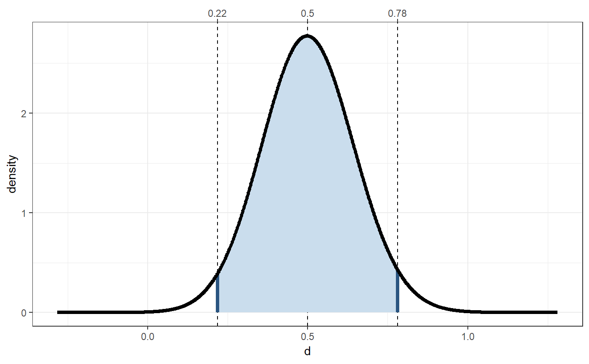
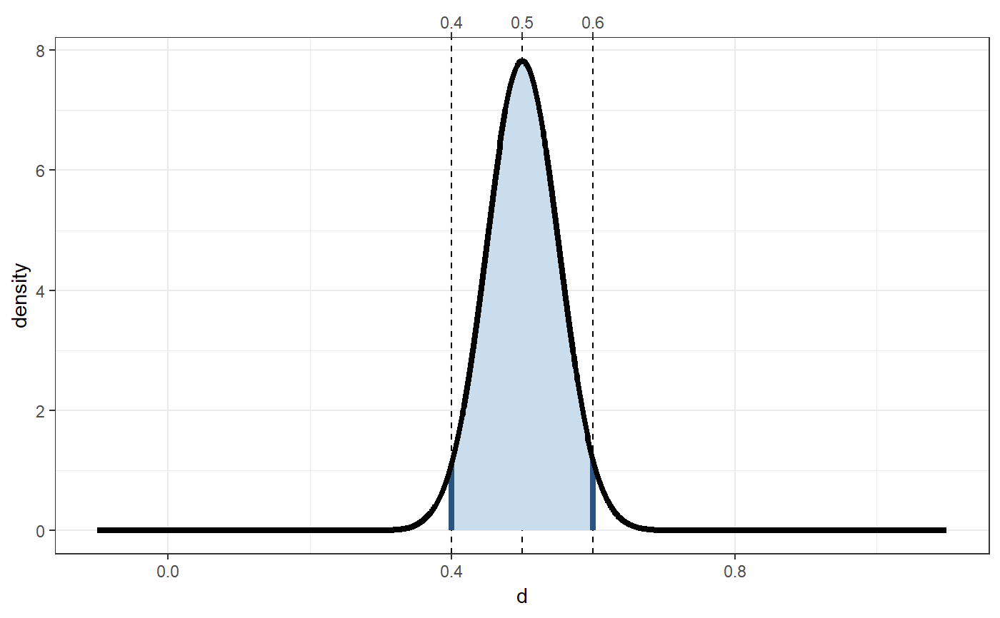

cohensDdistribution.RdThese functions use some conversion to and from the t distribution to
provide the Cohen's d distribution. There are four versions that act
similar to the standard distribution functions (the d., p.,
q., and r. functions, and their longer aliases
.Cohensd), three convenience functions (pdExtreme,
pdMild, and pdInterval), a function to compute the confidence
interval for a Cohen's d estimate cohensdCI, and a function to
compute the sample size required to obtain a confidence interval around a
Cohen's d estimate with a specified accuracy (pwr.cohensdCI
and its alias pwr.confIntd).
cohensdCI(d, n, conf.level = 0.95, plot = FALSE, silent = TRUE) dCohensd(x, df = NULL, populationD = 0, n = NULL, n1 = NULL, n2 = NULL, silent = FALSE) pCohensd(q, df, populationD = 0, lower.tail = TRUE) qCohensd(p, df, populationD = 0, lower.tail = TRUE) rCohensd(n, df, populationD = 0) pdInterval(ds, n, populationD = 0) pdExtreme(d, n, populationD = 0) pdMild(d, n, populationD = 0) pwr.cohensdCI(d, w = 0.1, conf.level = 0.95, extensive = FALSE, silent = TRUE)
| n, n1, n2 | Desired number of Cohen's d values for |
|---|---|
| conf.level | The level of confidence of the confidence interval. |
| plot | Whether to show a plot of the sampling distribution of Cohen's
d and the confidence interval. This can only be used if specifying
one value for |
| silent | Whether to provide |
| x, q, d | Vector of quantiles, or, in other words, the value(s) of Cohen's d. |
| df | Degrees of freedom. |
| populationD | The value of Cohen's d in the population; this determines the center of the Cohen's d distribution. I suppose this is the noncentrality parameter. |
| lower.tail | logical; if TRUE (default), probabilities are the likelihood of finding a Cohen's d smaller than the specified value; otherwise, the likelihood of finding a Cohen's d larger than the specified value. |
| p | Vector of probabilites (p-values). |
| ds | A vector with two Cohen's d values. |
| w | The desired 'half-width' or margin of error of the confidence interval. |
| extensive | Whether to only return the required sample size, or more extensive results. |
dCohensd (or dd) gives the density, pCohensd
(or pd) gives the distribution function, qCohensd (or
qd) gives the quantile function, and rCohensd (or rd)
generates random deviates.
pdExtreme returns the probability (or probabilities) of finding a
Cohen's d equal to or more extreme than the specified value(s).
pdMild returns the probability (or probabilities) of finding a
Cohen's d equal to or less extreme than the specified
value(s).
pdInterval returns the probability of finding a Cohen's d that
lies in between the two specified values of Cohen's d.
cohensdCI provides the confidence interval(s) for a given Cohen's
d value.
pwr.cohensdCI provides the sample size required to obtain a
confidence interval for Cohen's d with a desired width.
The functions use convert.d.to.t and
convert.t.to.d to provide the Cohen's d distribution.
More details about cohensdCI and pwr.cohensdCI are provided in
Peters & Crutzen (2017).
Peters, G. J. Y. & Crutzen, R. (2017) Knowing exactly how effective an intervention, treatment, or manipulation is and ensuring that a study replicates: accuracy in parameter estimation as a partial solution to the replication crisis. http://dx.doi.org/
Maxwell, S. E., Kelley, K., & Rausch, J. R. (2008). Sample size planning for statistical power and accuracy in parameter estimation. Annual Review of Psychology, 59, 537-63. https://doi.org/10.1146/annurev.psych.59.103006.093735
Cumming, G. (2013). The New Statistics: Why and How. Psychological Science, (November). https://doi.org/10.1177/0956797613504966
convert.d.to.t, convert.t.to.d,
dt, pt, qt, rt
### Confidence interval for Cohen's d of .5 ### from a sample of 200 participants, also ### showing this visually: this clearly shows ### how wildly our Cohen's d value can vary ### from sample to sample. cohensdCI(.5, n=200, plot=TRUE);#> lo hi #> d=0.5, n=200 0.2225057 0.7834273 #> attr(,"plot")#> attr(,"class") #> [1] "cohensdCI"### How many participants would we need if we ### would want a more accurate estimate, say ### with a maximum confidence interval width ### of .2? pwr.cohensdCI(.5, w=.1);#> [1] 1574### Show that 'sampling distribution': cohensdCI(.5, n=pwr.cohensdCI(.5, w=.1), plot=TRUE);#> lo hi #> d=0.5, n=1574 0.4000818 0.6006593 #> attr(,"plot")#> attr(,"class") #> [1] "cohensdCI"### Generate 10 random Cohen's d values rCohensd(10, 20, populationD = .5);#> [1] 0.5668471 -0.4144309 0.6942330 0.7269160 1.1568028 -0.2864616 #> [7] 0.3200888 0.4652278 0.3676641 0.3434374### Probability of findings a Cohen's d smaller than ### .5 if it's 0 in the population (i.e. under the ### null hypothesis) pCohensd(.5, 64);#> [1] 0.9767939### Probability of findings a Cohen's d larger than ### .5 if it's 0 in the population (i.e. under the ### null hypothesis) 1 - pCohensd(.5, 64);#> [1] 0.02320611### Probability of findings a Cohen's d more extreme ### than .5 if it's 0 in the population (i.e. under ### the null hypothesis) pdExtreme(.5, 64);#> [1] 0.04988584### Probability of findings a Cohen's d more extreme ### than .5 if it's 0.2 in the population. pdExtreme(.5, 64, populationD = .2);#> [1] 0.2406812